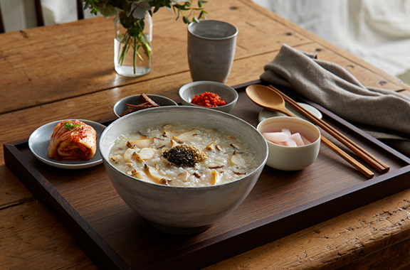
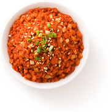
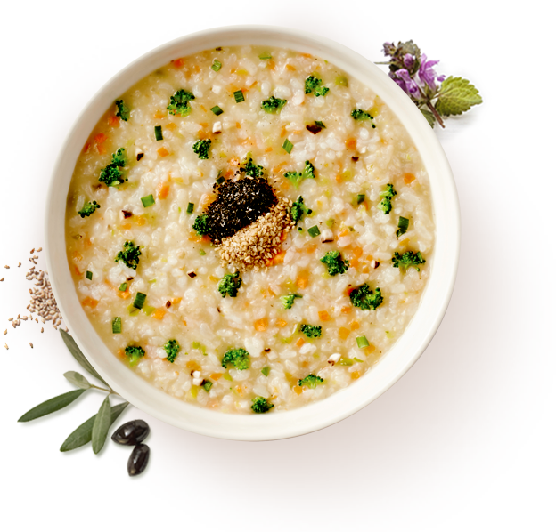
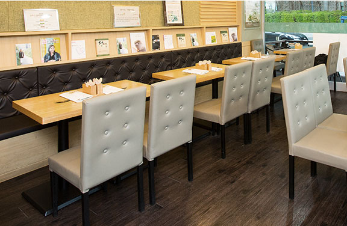

로그인
회원가입
가맹문의
브랜드소개
메뉴소개
매장찾기
이벤트
주문하기
창업
정성이 담긴 본죽
본죽
으로
따뜻한 마음
을 전하세요
나만의 맞춤죽
본죽
의
죽 전문가
에게 지금 문의하세요!
주문하기
간편한 결제와 신속한 배달
선물하기
본죽으로 전하는 따뜻한 마음
단체주문
1644-6288 (100개 이상 주문 시)
독보적 1위 브랜드 본죽
본죽과 함께 새로운 푸드 라이프스타일을 시작하세요.

본죽 브랜드 소개
행복과 건강은 기본에서 시작하기에 ‘본’(本)을 지키고 키워가는 죽을 만듭니다. 몸을 채우는 건강한 든든함. 마음을 데우는 따뜻한 온기. 정성을 다하는 삶, 더 나은 하루를 만듭니다.
자세히 보기
본죽 메뉴 소개
정성과 프리미엄이 담긴 본죽의 메뉴를 만나보세요.
온라인 주문을 통해서도 주문이 가능합니다.
자세히 보기


가장 속 편한 행복
본죽만의 색다른 행복 레시피 입니다.
본죽 매장 찾기
행복과 건강은 기본에서 시작하기에 ‘본’(本)을 지키고 키워가는 죽을 만듭니다. 몸을 채우는 건강한 든든함. 마음을 데우는 따뜻한 온기. 정성을 다하는 삶, 더 나은 하루를 만듭니다.
자세히 보기
